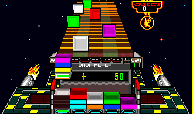

Interview With Mark Pierce, Creator of Klax
Article Published by Cameron at 2026/05/12 9:25 PM CET
It is the Nineties and there is time for Klax!
We sat down with Mark Pierce, creator of Klax!
Mark agreed to spill all of the details on the origin, development, and spread of Klax! We at SusFeed are honored to get such a momentous interview with the mind behind the greatest game of all-time, so it was a bit difficult to find where to start.
So, we decided the start would be a pretty good place to start.
